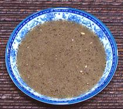

|
Tuk Meric | Muoi Tieu CanhCambodia - Tuk Meric | Viet - Muoi Tieu Canh | ||||
| Serves: Effort: Sched: DoAhead: |
4 * 10 min Yes |
This condiment takes its place on the table at almost every Cambodian meal - used for both dipping and sprinkling. It is also popular in Vietnam, but there may contain some fresh Thai Chili. For serving, see Note-2. | |||
|
|
4 2 12 |
t t |
Peppercorns (1) Salt Lime Wedges |
Make: - (10 min)
|